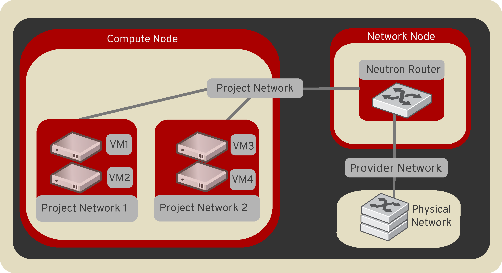

OpenStack Networking¶
OpenStack Networking allows you to create and manage network objects, such as networks, subnets, and ports, which other OpenStack services can use. Plug-ins can be implemented to accommodate different networking equipment and software, providing flexibility to OpenStack architecture and deployment.
The Networking service, code-named neutron, provides an API that lets you define network connectivity and addressing in the cloud. The Networking service enables operators to leverage different networking technologies to power their cloud networking. The Networking service also provides an API to configure and manage a variety of network services ranging from L3 forwarding and Network Address Translation (NAT) to perimeter firewalls, and virtual private networks.
It includes the following components:
- API server
The OpenStack Networking API includes support for Layer 2 networking and IP Address Management (IPAM), as well as an extension for a Layer 3 router construct that enables routing between Layer 2 networks and gateways to external networks. OpenStack Networking includes a growing list of plug-ins that enable interoperability with various commercial and open source network technologies, including routers, switches, virtual switches and software-defined networking (SDN) controllers.
- OpenStack Networking plug-in and agents
Plugs and unplugs ports, creates networks or subnets, and provides IP addressing. The chosen plug-in and agents differ depending on the vendor and technologies used in the particular cloud. It is important to mention that only one plug-in can be used at a time.
- Messaging queue
Accepts and routes RPC requests between agents to complete API operations. Message queue is used in the ML2 plug-in for RPC between the neutron server and neutron agents that run on each hypervisor, in the ML2 mechanism drivers for Open vSwitch and Linux bridge.
Concepts¶
To configure rich network topologies, you can create and configure networks and subnets and instruct other OpenStack services like Compute to attach virtual devices to ports on these networks. OpenStack Compute is a prominent consumer of OpenStack Networking to provide connectivity for its instances. In particular, OpenStack Networking supports each project having multiple private networks and enables projects to choose their own IP addressing scheme, even if those IP addresses overlap with those that other projects use. There are two types of network, project and provider networks. It is possible to share any of these types of networks among projects as part of the network creation process.
Provider networks¶
Provider networks offer layer-2 connectivity to instances with optional support for DHCP and metadata services. These networks connect, or map, to existing layer-2 networks in the data center, typically using VLAN (802.1q) tagging to identify and separate them.
Provider networks generally offer simplicity, performance, and reliability
at the cost of flexibility. By default only administrators can create or
update provider networks because they require configuration of physical
network infrastructure. It is possible to change the user who is allowed to
create or update provider networks with the following parameters of
policy.yaml:
create_network:provider:physical_networkupdate_network:provider:physical_network
Warning
The creation and modification of provider networks enables use of physical network resources, such as VLAN-s. Enable these changes only for trusted projects.
Also, provider networks only handle layer-2 connectivity for instances, thus lacking support for features such as routers and floating IP addresses.
In many cases, operators who are already familiar with virtual networking architectures that rely on physical network infrastructure for layer-2, layer-3, or other services can seamlessly deploy the OpenStack Networking service. In particular, provider networks appeal to operators looking to migrate from the Compute networking service (nova-network) to the OpenStack Networking service. Over time, operators can build on this minimal architecture to enable more cloud networking features.
In general, the OpenStack Networking software components that handle layer-3 operations impact performance and reliability the most. To improve performance and reliability, provider networks move layer-3 operations to the physical network infrastructure.
In one particular use case, the OpenStack deployment resides in a mixed environment with conventional virtualization and bare-metal hosts that use a sizable physical network infrastructure. Applications that run inside the OpenStack deployment might require direct layer-2 access, typically using VLANs, to applications outside of the deployment.
Routed provider networks¶
Routed provider networks offer layer-3 connectivity to instances. These networks map to existing layer-3 networks in the data center. More specifically, the network maps to multiple layer-2 segments, each of which is essentially a provider network. Each has a router gateway attached to it which routes traffic between them and externally. The Networking service does not provide the routing.
Routed provider networks offer performance at scale that is difficult to achieve with a plain provider network at the expense of guaranteed layer-2 connectivity.
Neutron port could be associated with only one network segment, but there is an exception for OVN distributed services like OVN Metadata.
See Routed provider networks for more information.
Self-service networks¶
Self-service networks primarily enable general (non-privileged) projects to manage networks without involving administrators. These networks are entirely virtual and require virtual routers to interact with provider and external networks such as the Internet. Self-service networks also usually provide DHCP and metadata services to instances.
In most cases, self-service networks use overlay protocols such as VXLAN or GRE because they can support many more networks than layer-2 segmentation using VLAN tagging (802.1q). Furthermore, VLANs typically require additional configuration of physical network infrastructure.
IPv4 self-service networks typically use private IP address ranges (RFC1918) and interact with provider networks via source NAT on virtual routers. Floating IP addresses enable access to instances from provider networks via destination NAT on virtual routers. IPv6 self-service networks always use public IP address ranges and interact with provider networks via virtual routers with static routes.
The Networking service implements routers using a layer-3 agent that typically resides at least one network node. Contrary to provider networks that connect instances to the physical network infrastructure at layer-2, self-service networks must traverse a layer-3 agent. Thus, oversubscription or failure of a layer-3 agent or network node can impact a significant quantity of self-service networks and instances using them. Consider implementing one or more high-availability features to increase redundancy and performance of self-service networks.
Users create project networks for connectivity within projects. By default, they are fully isolated and are not shared with other projects. OpenStack Networking supports the following types of network isolation and overlay technologies.
- Flat
All instances reside on the same network, which can also be shared with the hosts. No VLAN tagging or other network segregation takes place.
- VLAN
Networking allows users to create multiple provider or project networks using VLAN IDs (802.1Q tagged) that correspond to VLANs present in the physical network. This allows instances to communicate with each other across the environment. They can also communicate with dedicated servers, firewalls, and other networking infrastructure on the same layer 2 VLAN.
- GRE and VXLAN
VXLAN and GRE are encapsulation protocols that create overlay networks to activate and control communication between compute instances. A Networking router is required to allow traffic to flow outside of the GRE or VXLAN project network. A router is also required to connect directly-connected project networks with external networks, including the Internet. The router provides the ability to connect to instances directly from an external network using floating IP addresses.

Subnets¶
A block of IP addresses and associated configuration state. This is also known as the native IPAM (IP Address Management) provided by the networking service for both project and provider networks. Subnets are used to allocate IP addresses when new ports are created on a network.
Subnet pools¶
End users normally can create subnets with any valid IP addresses without other restrictions. However, in some cases, it is nice for the admin or the project to pre-define a pool of addresses from which to create subnets with automatic allocation.
Using subnet pools constrains what addresses can be used by requiring that every subnet be within the defined pool. It also prevents address reuse or overlap by two subnets from the same pool.
See Subnet Pools for more information.
Ports¶
A port is a connection point for attaching a single device, such as the NIC of a virtual server, to a virtual network. The port also describes the associated network configuration, such as the MAC and IP addresses to be used on that port.
Routers¶
Routers provide virtual layer-3 services such as routing and NAT between self-service and provider networks or among self-service networks belonging to a project. The Networking service uses a layer-3 agent to manage routers via namespaces.
Security groups¶
Security groups provide a container for virtual firewall rules that control
ingress (inbound to instances) and egress (outbound from instances) network
traffic at the port level. Security groups use a default deny policy and
only contain rules that allow specific traffic. Each port can reference one
or more security groups in an additive fashion. The firewall driver
translates security group rules to a configuration for the underlying packet
filtering technology such as iptables.
Each project contains a default security group that by default allows all
egress traffic and denies all ingress traffic. You can change the rules in the
default security group. Admin user can also define own set of security
group rules which will be added by default to each new default and each new
non-default (custom) security group created for every project in the cloud.
There is security-group-default-rules API extension which allows to define
such own set of the default security group rules.
If you launch an instance without specifying a security group, the default
security group automatically applies to it. Similarly, if you create a port
without specifying a security group, the default security group
automatically applies to it.
Note
If you use the metadata service, removing the default egress rules denies access to TCP port 80 on 169.254.169.254, thus preventing instances from retrieving metadata.
Security group rules are stateful. Thus, allowing ingress TCP port 22 for secure shell automatically creates rules that allow return egress traffic and ICMP error messages involving those TCP connections.
By default, all security groups contain a series of basic (sanity) and anti-spoofing rules that perform the following actions:
Allow egress traffic only if it uses the source MAC and IP addresses of the port for the instance, source MAC and IP combination in
allowed-address-pairs, or valid MAC address (port orallowed-address-pairs) and associated EUI64 link-local IPv6 address.Allow egress DHCP discovery and request messages that use the source MAC address of the port for the instance and the unspecified IPv4 address (0.0.0.0).
Allow ingress DHCP and DHCPv6 responses from the DHCP server on the subnet so instances can acquire IP addresses.
Deny egress DHCP and DHCPv6 responses to prevent instances from acting as DHCP(v6) servers.
Allow ingress/egress ICMPv6 MLD, neighbor solicitation, and neighbor discovery messages so instances can discover neighbors and join multicast groups.
Deny egress ICMPv6 router advertisements to prevent instances from acting as IPv6 routers and forwarding IPv6 traffic for other instances.
Allow egress ICMPv6 MLD reports (v1 and v2) and neighbor solicitation messages that use the source MAC address of a particular instance and the unspecified IPv6 address (::). Duplicate address detection (DAD) relies on these messages.
Allow egress non-IP traffic from the MAC address of the port for the instance and any additional MAC addresses in
allowed-address-pairson the port for the instance.
Those rules mentioned above are added automatically by neutron and cannot be
changed using default security group rules API provided by the
security-group-default-rules extensions.
Although non-IP traffic, security groups do not implicitly allow all ARP traffic. Separate ARP filtering rules prevent instances from using ARP to intercept traffic for another instance. You cannot disable or remove these rules.
You can disable security groups including basic and anti-spoofing rules
by setting the port attribute port_security_enabled to False.
Extensions¶
The OpenStack Networking service is extensible. Extensions serve two
purposes: they allow the introduction of new features in the API
without requiring a version change and they allow the introduction of
vendor specific niche functionality. Applications can programmatically
list available extensions by performing a GET on the
/extensions URI. Note that this is a versioned request; that
is, an extension available in one API version might not be available
in another.
DHCP¶
The optional DHCP service manages IP addresses for instances on provider
and self-service networks. The Networking service implements the DHCP
service using an agent that manages qdhcp namespaces and the
dnsmasq service.
Metadata¶
The optional metadata service provides an API for instances to obtain metadata such as SSH keys.
Service and component hierarchy¶
Server¶
Provides API, manages database, etc.
Plug-ins¶
Manages agents
Agents¶
Provides layer 2/3 connectivity to instances
Handles physical-virtual network transition
Handles metadata, etc.
Layer 2 (Ethernet and Switching)¶
Linux Bridge
OVS
Layer 3 (IP and Routing)¶
L3
DHCP
Miscellaneous¶
Metadata
Services¶
Routing services¶
VPNaaS¶
The Virtual Private Network-as-a-Service (VPNaaS) is a neutron extension that introduces the VPN feature set.
LBaaS¶
The Load-Balancer-as-a-Service (LBaaS) API provisions and configures load balancers. The reference implementation is based on the HAProxy software load balancer. See the Octavia project for more information.
FWaaS¶
The Firewall-as-a-Service (FWaaS) API allows to apply firewalls to OpenStack objects such as projects, routers, and router ports.

{kind=link}